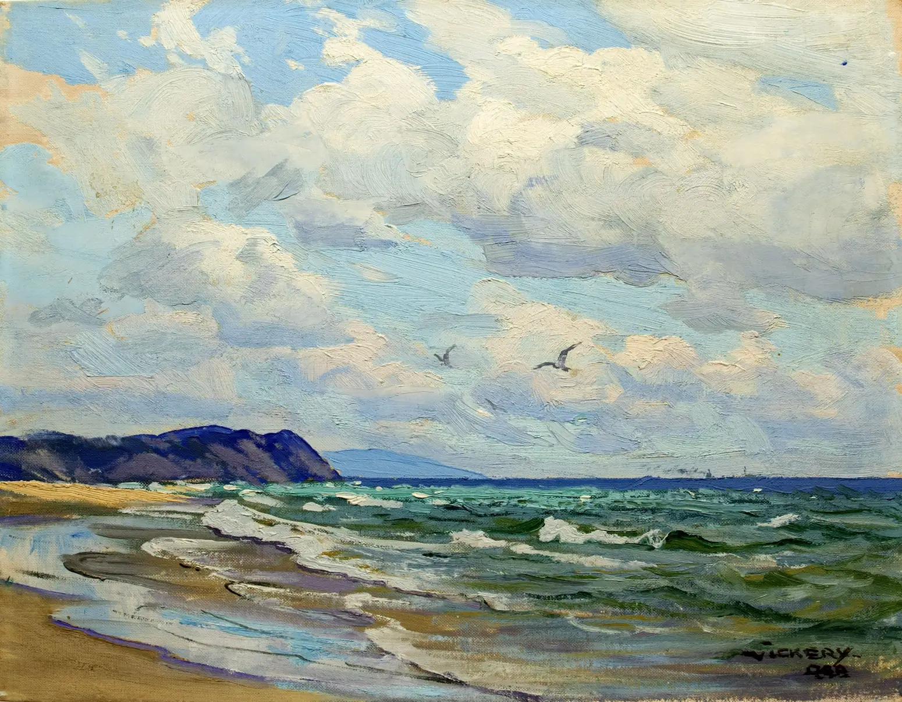

아직 모르는 세계를 배우고, 서로 다른 것을 연결하며, 선택할 수 있는 삶을 조금씩 만들어가고 있습니다.

배움 · 질문을 넓히는 일
새로운 것을 경험하고, 사고를 확장하는 일.
새로운 분야를 배울 때마다 기존의 경험을 버리기보다 서로 연결해봅니다. 제도와 시장, 기술과 사람이 어떤 영향을 주고받는지 살펴보는 과정에서 세상을 보는 범위도 조금씩 넓어졌습니다.
이렇게 얻은 배움은 변화 속에서 더 좋은 판단을 하는 데 도움이 됩니다.
연결 · 함께 움직이게 하는 일
연결하고 조합하고 함께 움직이는 즐거움.
서로 다른 이질적인 것은 각자의 언어를 이해하고 같은 목표로 연결을 요구합니다.
복잡한 일을 작게 나누고 다시 하나의 흐름으로 묶는 데 익숙합니다. 함께 움직일 수 있는 구조를 만듭니다.
선택 · 내 방향을 정하는 일
정해진 테두리보다, 스스로 선택할 수 있는 삶을 지향합니다.
저에게 자율성은 무엇을 중요하게 여길지 스스로 정할 수 있는 힘에 가깝습니다.
방향을 스스로 정하는 일에는 불확실성과 책임이 함께 따릅니다. 하나의 확신을 서둘러 만들기보다 가능한 시나리오를 그리고, 작은 목표를 통해 다음 선택의 근거를 쌓아갑니다.
생각 · 실행을 하는 일
생각을 현실로 옮깁니다.
생각을 오래 다듬는 편이지만, 완전한 답을 기다리면 출발이 늦습니다.
실행의 목적은 무엇이 작동하고 무엇을 바꿔야 하는지 배우는 데 있습니다.